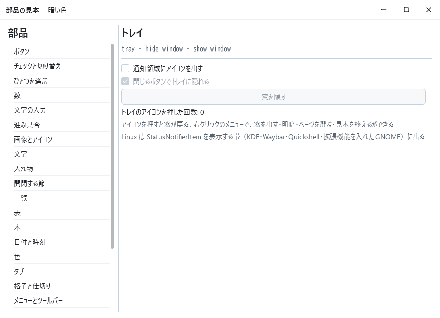
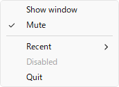
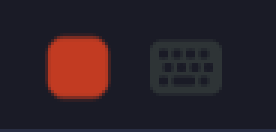

kargui 開発レポート ・ 第 16 章
トレイ
アプリの仕組みの 2 つ目として、通知領域のアイコン（トレイ）を作りました。アイコンには、説明・押した時の知らせ・右クリックのメニューがあります。あわせて、窓を隠す・出す仕組みも作り、「閉じるボタンでトレイに隠れる」アプリを書けるようにしました。Windows と Linux（Wayland と X11）で同時に作っています。この章では、書き方と、OS ごとに違う知らせの届き方を紹介します。後半では、作者の手の確かめで見つけた「アイコンを押しても見本に届かない」不具合と、手元の確かめでそれを見落とした理由を書きます。
この章で分かること
- OS が描くメニューを、kargui のメニューと同じ書き方で作る方法
- Windows と Linux で、トレイの知らせがどう届くか
- 窓を出す・隠すを「状態」でなく「呼んだ時の命令」にした理由
- Wayland で、隠した窓を決まりどおりに出し直しても戻らなかった理由
- OS が「送る」知らせを、確かめで「積んで」送ると、不具合を見落とす理由
範囲を決めた
題の帯を送った後、作者にトレイの範囲を尋ねました。Linux のトレイは StatusNotifierItem という決まりで、D-Bus でやり取りします。kargui は読み上げとファイルのダイアログのために D-Bus の道具（zbus）を既に使っているので、依存は増えません。
| 案 | 使える OS | 確かめの手間 | 作る量 |
|---|---|---|---|
| Windows と Linux を同時に（推奨） | Windows と、トレイを出す帯がある Linux（KDE、Hyprland の帯など）。拡張機能の無い GNOME には出ない | 検証機の帯にトレイの表示が要るかもしれない（調べる前） | 多い |
| Windows だけ先に | Windows だけ。Linux は後で | Windows の本物の窓で済む | 少ない |
作者の答えは「同時に作って」でした。調べると、検証機の上の帯（Quickshell）は、トレイの受け手（StatusNotifierWatcher）と表示役を既に持っていました。検証機に何も入れずに確かめられました。

書き方
主の窓のビューで ui.tray を呼んでいる間、アイコンが出ます。呼ばなくなるとアイコンを消します。メニューは OS が描くので、kargui のメニュー（Menu）と同じ名前の関数を持つ別の型（TrayMenu）で中身だけを集めます。アプリの書き方は、kargui のメニューと同じです。
let (mut show, mut quit) = (false, false);
ui.tray(|t| {
t.tooltip("Notes");
show = t.clicked();
t.menu(|m| {
show |= m.item("Show window").clicked();
m.check(&mut self.muted, "Mute");
m.separator();
quit = m.item("Quit").clicked();
});
});
if show {
ui.show_window();
}
if quit {
ui.quit();
}uiはui.trayの中で使えないので、押した・選んだことを変数に覚え、後で窓を出す・アプリを終えるなどを行う。- 押した・選んだ知らせは入力として届き、入力を渡す回のビューでだけ
clicked()が true になる。ボタンを押した時と同じ扱い。 - メニューの項目と区切りには、作った順の番号を付ける。並びが同じなら次のフレームでも同じ番号なので、OS が返した番号から項目が分かる。
- 「閉じるボタンでトレイに隠れる」アプリは、
App::close_requestedで false を返し、次のビューでui.hide_window()を呼ぶ。

知らせの届き方
アイコンを押した・項目を選んだという知らせは、OS ごとに違う道でアプリに届きます。どちらも最後は kargui の入力（Event::Tray）になり、ビューから見ると同じです。
Windows の作り
Windows は Shell_NotifyIconW でアイコンを出します。新しい形の知らせ（NOTIFYICON_VERSION_4）では、左のボタンで押した時に NIN_SELECT、右クリックで WM_CONTEXTMENU が届きます。右クリックでは、kargui が OS のメニュー（TrackPopupMenuEx）を出し、選ばれた番号を入力にします。
- OS への呼び出しとメニューは、窓の状態を借りていない時に行う。メニューは閉じるまで戻らず、その間も窓の知らせを受けるため（第 15 章の 3 回目と同じ）。
- メニューを出す前に窓を前面にし、閉じた後に何もしない知らせを積む。こうしないと、メニューの外を押しても閉じず、次に開いたメニューがすぐ閉じる（Microsoft の TrackPopupMenu の説明にある注意）。
- エクスプローラーが起動し直した時の知らせ（TaskbarCreated）で、アイコンを入れ直す。窓を壊す時にアイコンを消す。消さないと、ポインターが乗るまで通知領域に残る。
- アイコンの画像は、通知領域の大きさ（その窓の DPI の小さいアイコン）に縮めてから渡す。縮める処理は、乗算済みの色のまま平均する。
Linux の作り
Linux は、StatusNotifierItem（アイコン・説明・押した）と com.canonical.dbusmenu（メニュー）を D-Bus に出し、受け手（org.kde.StatusNotifierWatcher）に届け出ます。受け手が後から起動した時は、名前の持ち主が変わる知らせを見て届け出直します。メニューは、帯が GetLayout で木を読み、項目を選ぶと Event（clicked）で知らせてくる作りです。
dbusmenu は、区切りにも番号が要ります。最初は区切りの番号を「木をたどった順」で付けていました。ところが帯は、深さを限って木を読むことがあり、その時は番号がずれます。書き終えた後の見直しでこれに気づき、区切りにも作った順の番号を付ける形に変えました。

検証機の帯は、アイコンを左クリックすると Activate を呼びますが、右クリックではメニューを出さない設定でした。そのため、メニューは帯が使うのと同じ D-Bus の呼び出し（GetLayout と Event）を、busctl で送って確かめました。帯の設定は変えていません。
| 確かめたこと | Wayland | X11（XWayland） |
|---|---|---|
| 受け手に届け出る | 受け手の一覧に入り、帯にアイコンが出た | 受け手の一覧に入った |
| メニューの木 | 7 つの節（印の付く項目・区切り・入れ子・押せない項目）がそろった | 読んでいない（Wayland と同じスレッドの処理） |
| 閉じると隠れ、押すと戻る | 直した後に戻った（下の落とし穴） | 地図から外して隠れ、地図に戻して前面になった |
| 項目を選ぶ | 印が付き、説明が変わった | 説明が変わった |
| 終わる | 受け手の一覧から消えた | 同じ |
窓を隠す・出す
最初は、ui.show_window() を「毎フレーム呼んでもよい状態」として作りかけました。ところが、それでは利用者が窓を最小化した直後のフレームで、アプリの呼ぶ show_window が窓をすぐ戻してしまいます。そこで、hide_window と show_window は「呼んだ時にそうする命令」にしました。アプリは、トレイを押した・閉じた、などの出来事の時だけ呼びます。
Wayland の決まり（xdg-shell）では、窓から絵を外して下ろした後、絵の無い commit をすると、合成が設定（configure）を送り直し、窓を出し直せます。ところが Hyprland 0.55 は、この commit に設定を返しませんでした。kargui は設定を待つ間はビューを回さないので、後から届いたトレイの知らせも止まりました。出す時は、窓の役目（xdg_surface と xdg_toplevel）を壊して作り直してください。新しく作った役目には、合成が必ず最初の設定を送ります。隠している間も、設定を待たずにビューを回し（描かない）、トレイの知らせを受け取れるようにしました。
作者の手の確かめ
見本の 24 ページ目「トレイ」で、作者に 12 の手順を試してもらいました。アイコンを出す、押す、右クリックのメニューで明暗やページを選ぶ、窓を隠す・閉じる・最小化してから押して戻す、アイコンを消す、メニューで見本を終える、などです。
| 回 | 記録から見つかったこと | 直し方 |
|---|---|---|
| 1 回目 | アイコンを左クリックしても、見本に届かなかった（OS の「押した」は 13 回あった）。左クリックとメニューの選択が重なると、左クリックが消えた。終わる時に、消したアイコンを出し直そうとした | 知らせの後に輪を起こす。知らせを並びで持つ。壊した窓はフレームを回さない |
| 2 回目 | 異常なし。左クリック 4 回が、どれも同じミリ秒のうちに見本に届いた | ― |
1 回目: アイコンを押しても届かなかった
記録には、OS からの「押した」（tray.click）が 13 回ありました。ところが、見本の「押した」は 1 回も出ず、押した後に描く処理も走っていませんでした。窓が戻ったのは、メニューの「窓を出す」を選んだ時だけでした。
kargui の Windows の輪は、GetMessage が戻った後に、描き直しを頼まれた窓のフレームを回します。一方、エクスプローラーはトレイの知らせを窓に「送る」（SendMessage）ので、知らせは GetMessage の中で処理されます。GetMessage は、積まれた知らせが来るまで戻りません。そのため、フレームを回す頼みは、マウスが窓の上を動くなどして次の知らせが積まれるまで、放っておかれました。メニューの項目だけが届いたのは、メニューを閉じた後に、決まりどおり何もしない知らせを積んでいたからです。
直し方は、トレイの知らせを受けた時に、何もしない知らせ（WM_NULL）を積んで輪を起こすことです。フレームが回らない間に、左クリックとメニューの選択が 1 つのフレームにまとめて届き、左クリックが消えていたことも分かりました。トレイの知らせを 1 つしか持てない欄にしていたためで、並びで持つ形に直しました（試験を先に書き、落ちることを確かめてから直しています）。
手元の確かめの道具は、トレイの知らせを PostMessage で積んで送っていました。積んだ知らせは GetMessage を戻すので、輪は普通にフレームを回し、不具合は出ません。OS が SendMessage で送る知らせを確かめる時は、確かめでも SendMessage で送ってください。道具を SendMessage に変えると、同じ不具合が手元で再現しました。
確かめのアプリは、20 秒で自分で終わるために、1 秒ごとにフレームを回していました。そのため、知らせの後にフレームが回らなくても、1 秒以内には次のフレームで処理され、窓は戻っていました。見本には周期のフレームが無いので、作者の手元では窓が戻りませんでした。確かめのアプリは、終わる時刻にだけ起きる形に直しました。
数
トレイで足した試験は 9 個です（共通 5、Linux の D-Bus の形 2、画像の大きさ 1、見本 1）。公開の項目の説明は 610 から 622 に、動く例は 430 から 439 に増えました。説明の中の動く例（doc テスト）は 694 から 715 に増えました。新しいファイルは 3 つで、合わせて 974 行です（Linux の sni.rs 495 行、共通の ui/tray.rs 336 行、Windows の tray_win.rs 143 行）。記録 20f50e8 は、作者の「送って」で GitHub に入りました。
CI
記録 20f50e8 は、CI の Windows・Linux・macOS で 1 回目から通りました。送る前に、CI の Windows と同じ 4 段と clippy を手元で走らせ、検証機でも試験（説明の中の例を含む）と clippy を走らせています。
次の段階
アプリの仕組みの次は、通知（トースト）です。その後に、ハイコントラスト、多言語の順で進めます。トレイでは、キーボードで通知領域へ移ってアイコンを選ぶ操作、エクスプローラーが起動し直した時の入れ直し、KDE と拡張機能を入れた GNOME での表示を、まだ確かめていません。